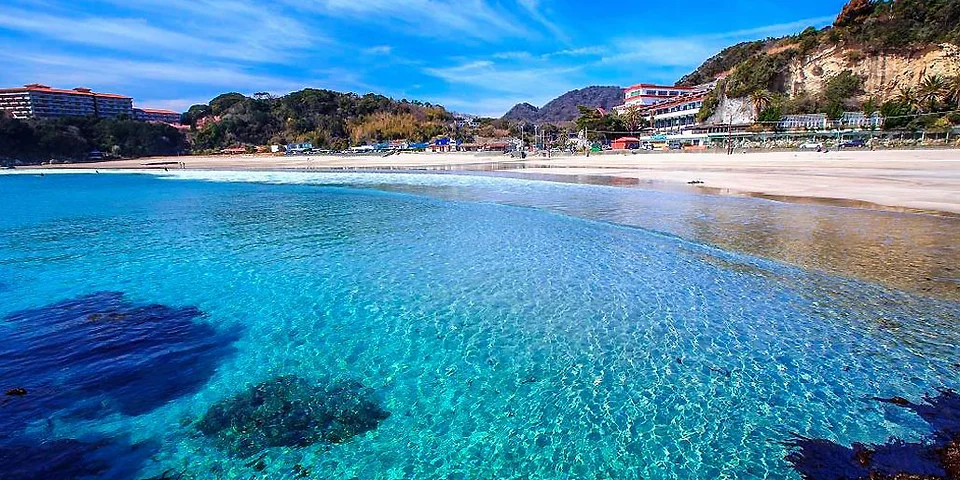
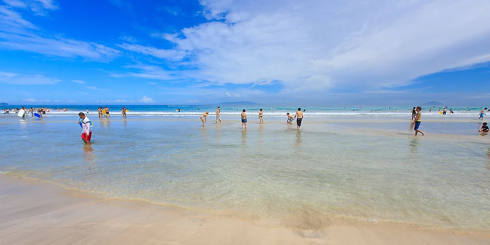

-

多々戸浜海水浴場
こちらの「多々戸浜海水浴場」は関東でも屈指の透明度を誇る海水浴場です！その透明度から休日には多くの観光客が訪れ、マリンスポーツやサーフィンの大会なども盛んに行われています。もちろん海水浴にもぴったりです！ 2022年は売店やテイクアウト販売を行っている食事処もあり、夏らしい1日を満喫できます。
公式 -

白浜中央海水浴場（長田浜）
こちらは名前の通り白い砂浜が特徴で、南国リゾート気分を味わえます。美しく輝くエメラルドグリーンの海は、ただ眺めているだけでうっとりすること間違いなし。 水質が綺麗なことで有名なので、晴れた日にはぜひ写真を撮ってみてください！食事処はありませんが、売店やレンタル用品を販売しているお店は営業しています。
公式 -

入田浜海水浴場
遠浅で綺麗なビーチなので、小さな子どものいる家族連れにもおすすめ！関東にいることを忘れてしまうほどのリゾート感を堪能できます。 落ち着いた雰囲気なので、穏やかなリゾート気分を楽しみたい方におすすめの海水浴場です！2022年は売店も営業しており、パラソルを立ててビーチベッドでくつろぐこともできます。
公式